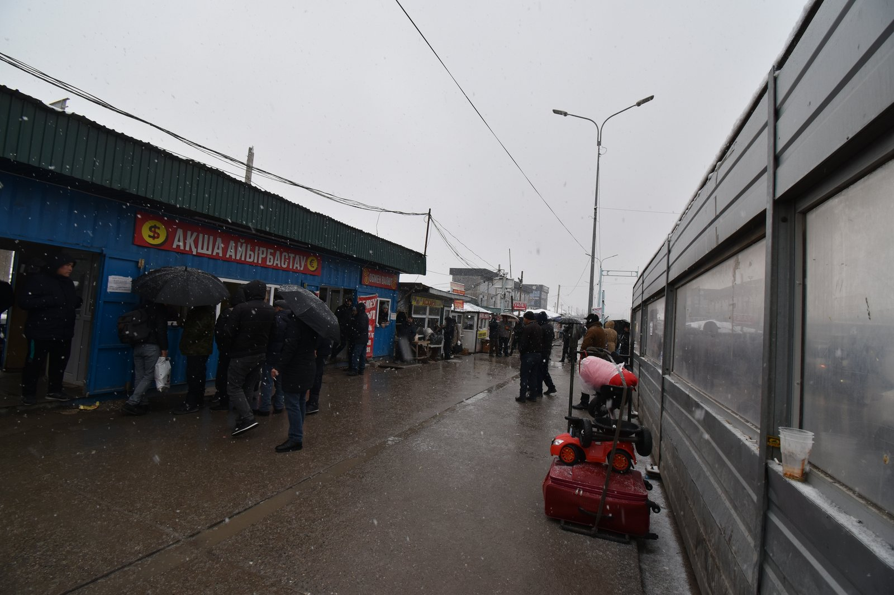

COVID-19 и 2020 год: массовое возвращение узбекских трудовых мигрантов
Пандемия 2020 года вызвала один из самых острых кризисов в истории узбекской трудовой миграции. Границы закрылись, тысячи мигрантов застряли на казахстанской границе, и — по данным опроса Программы развития ООН — за год на родину вернулось около полумиллиона узбеков. Денежные переводы, по оценке Всемирного банка, пережили самое резкое падение с момента независимости. Историческая справка, только факты.

Пандемия коронавируса 2020 года остановила передвижение во всём мире — и удар тяжело пришёлся на более чем миллион трудовых мигрантов Узбекистана. Когда границы закрылись, застрявшие за рубежом соотечественники остались без работы, дохода и возможности вернуться домой; многие пытались возвратиться. Ниже изложено это массовое возвращение 2020 года — его причины, даты и цифры — только факты.
Фон: зависимость от миграции
До пандемии Узбекистан был одной из самых зависимых от денежных переводов экономик мира: по данным Всемирного банка, в 2019 году переводы составляли около 14,8% валового внутреннего продукта страны. Большинство мигрантов работали в России, на втором месте — Казахстан. Поэтому внезапная остановка работы и дохода за рубежом напрямую затронула целые семьи.
Границы закрылись (март 2020)
Узбекистан закрыл границы в марте 2020 года. Мигранты, желавшие вернуться домой, остались по другую сторону — особенно на территории Казахстана, — потому что Узбекистан столкнулся с нехваткой мест в карантинных центрах. В результате люди вынуждены были неделями ждать на пограничных переходах.

Жибек Жолы: застрявшие на границе
Число узбекских мигрантов, застрявших на переходе Жибек Жолы («Шёлковый путь») на казахстанско-узбекской границе, к началу июля 2020 года достигло примерно 3 000–3 400 человек. По данным RFE/RL (Радио Свобода), 8–9 июля примерно 2 000 из них разрешили перейти домой, ещё 500 остались в очереди. Это стало одним из самых заметных образов кризиса.
Палаточные городки на российско-казахстанской границе
Застревали не только на юге: на российско-казахстанской границе мигранты тоже вынуждены были разбивать палаточные городки. Согласно сообщениям, около 11 мая 2020 года на одном переходе собралось более тысячи человек, а к 4 июня около 300 узбеков застряли на переходе Маштаково (эти цифры опираются на отдельные сообщения). Закрытые дороги и редкие рейсы ухудшали их положение.
Ответ государства: чартерные рейсы
Узбекистан организовал специальные (чартерные) рейсы, чтобы вывезти граждан из России. Но, как признавали чиновники и представители диаспоры, этих рейсов было слишком мало по сравнению с числом застрявших — по некоторым данным, один рейс мог вывезти около 150 человек, тогда как ждали десятки тысяч (сообщение Eurasianet). Поэтому возвращение растянулось на месяцы.
Обвал денежных переводов
Остановка работы за рубежом резко сократила и поток денег. Всемирный банк прогнозировал, что в 2020 году переводы в Европу и Центральную Азию упадут примерно на 16%, а поступления в Узбекистан пережили самое резкое снижение с момента независимости. Падение было особенно глубоким в начале года — в самые тяжёлые месяцы пандемии.
Визы и бедность
По данным исследования Oxus Society, в 2020 году российские рабочие визы, выданные узбекам, сократились на 52% (до 1 011 028), а учебные визы упали примерно на 63%. По мере сокращения денежных потоков и рабочих мест росла бедность: по оценке этой организации, в 2020 году около 1 миллиона узбеков опустились ниже черты бедности. Это показало экономическую цену зависимости от трудовой миграции.
Почему эта история важна
Массовое возвращение 2020 года стало важным поворотным моментом в истории современной узбекской трудовой миграции, обнажив, насколько опасна чрезмерная зависимость от единственного источника. Для диаспоры и для семей на родине это непосредственно пережитая история недавнего прошлого. Самые надёжные цифры в этой справке опираются на международные организации; несколько цифр из единственного источника отмечены в тексте как таковые.

Источники
- RFE/RL — Stranded Uzbek migrants allowed home from Kazakhstan (Zhibek Zholy crossing, 9 July 2020)
- UNDP — Support and Reintegration of Labor Repatriates in Uzbekistan (about 500,000 returned in 2020)
- World Bank — COVID-19 Crisis Through a Migration Lens (2020; ECA remittances projected to fall ~16%)
- Oxus Society — COVID-19 and Central Asian over-dependence on labor migration (Russian visas to Uzbeks −52%; ~1 million fell into poverty in 2020)
- Eurasianet — Uzbekistan: heartbreak and despair for expat laborers trapped by COVID (charter flights insufficient)